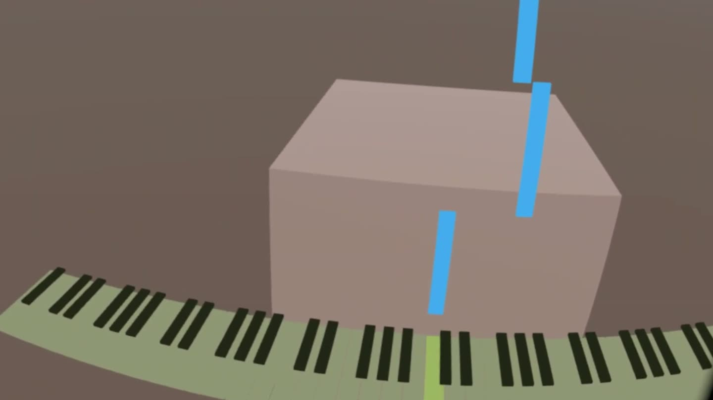
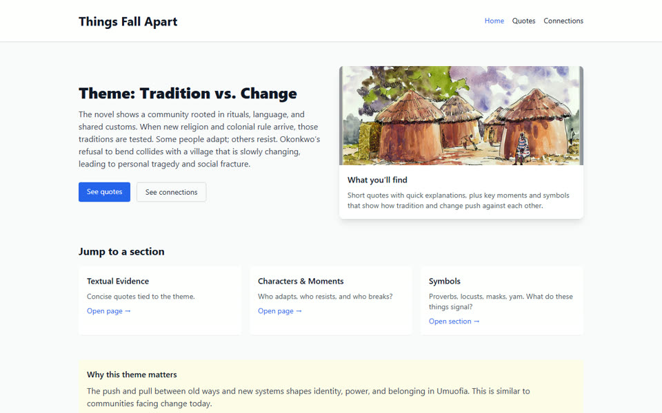

Wrong-note feedback
Play D instead of D♯ and the key turns red, and the app shows the note the song wanted.
Played DWanted D♯
I build mixed-reality apps and interactive websites, usually to teach something or to show how it works. Right now that means a piano trainer for the Meta Quest 3.
A falling-notes video can't tell you that you played D instead of D♯, or that is where you keep falling apart. PianoGlass can, while you play.
You sit at a real piano and the headset shows notes falling onto your real keys. The keyboard plugs into the headset over USB MIDI, so the app knows exactly which key you pressed and when, and can judge every note.
The menus are styled after Apple's Liquid Glass. Every panel on this page borrows from them.
 Through the headset · Nov 7
Through the headset · Nov 7



Clips were recorded on a Quest 2. The blue tint was a passthrough bug, fixed in a later build. Now at 515 commits and running on Quest 3.
Play D instead of D♯ and the key turns red, and the app shows the note the song wanted.
Every note gets a judgement and shows how early or late you were, in milliseconds.
After each try, the results card colours one box per bar by how well you played it, then suggests what to practise next.
Slow the tempo, loop bars, play one hand at a time, or let the song wait for you. Memory fade hides the notes as you learn them.
Does an app that listens to what a beginner plays, and corrects them in real time, help them learn a passage more accurately than a standard falling-notes app?
Each one is live. Physics, English, math and a team museum, all built from scratch.

A 3D water balloon slingshot, before and after our group's modification. It tracks forces and energy live and fires 20 shots from each launcher to compare accuracy.

A virtual museum on the right to mental health, with a lobby and five galleries. I built the site and curated the gallery on mental health and social media.

Game theory through the algebra behind it, with a simulator you can play against.

Tradition versus change in Chinua Achebe's novel, through quotes, characters and symbols.

Links The Other Wes Moore to real data about Atlanta, the US and the world.
From my AI class and my own experiments.
A Python port of the AP CS A Picture Lab, built on plain numpy arrays so students see how an image is stored before they start on machine learning. Includes a pixel-grid inspector notebook and a desktop app.
Detects and counts people in an image, draws a box around each one and overlays the total.
Loads any webpage from a URL, pulls out the content and writes a short summary with a language model.
Smaller things: a sigmoid neuron from scratch and Snake in Python turtle graphics.